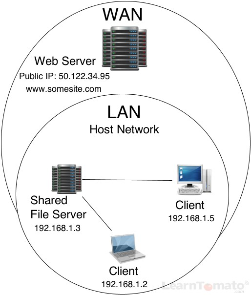
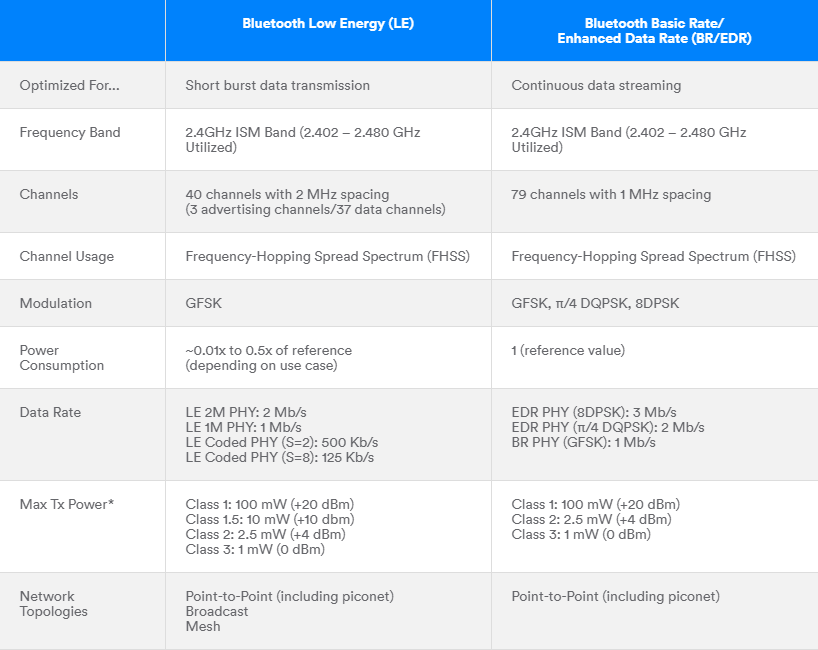

A client is a computer hardware device or software that accesses a service made available by a server. The server is often (but not always) located on a separate physical computer.
A server is a physical computer dedicated to run services to serve the needs of other computers. Depending on the service that is running, it could be a file server, database server, home media server, print server, or web server.
A host is a computer, connected to other computers for which it provides data or services over a network. In theory, every computer connected to a network acts as a host to other peers on the network. In essence, a host reflects the logical relationship of two or more computers on a network.
A server can be located inside or outside of your LAN. Accessibility to the server is determined by whether or not it has a public IP address or private IP address. If the server has a public IP address, it can be accessed from the web. If it has a private IP address, it can only be accessed from inside of your LAN (unless you setup port forwarding for remote access).
WiFi is a family of wireless networking technologies, based on the IEEE 802.11 family of standards, which are commonly used for local area networking (LAN) of devices and Internet access. Compatible devices can network through wireless access points to each other as well as to wired devices and the Internet (from Wikipedia).
A local area network is a computer network that interconnects computers within a limited area such as a residence, school, laboratory, university campus or office building. By contrast, a wide area network not only covers a larger geographic distance, but also generally involves leased telecommunication circuits.
It is fairly straightforward to set up an IoT in your LAN. Making it accessible to WAN is more difficult.
Bluetooth is a wireless technology standard used for exchanging data between fixed and mobile devices over short distances (up to tens of meters) using short-wavelength UHF radio waves in the industrial, scientific and medical radio bands, from 2.400 to 2.485 GHz, and building personal area networks (from Wikipedia). We won't be using Bluetooth classic this week; we'll be using BLE.
Bluetooth Low Energy, BLE for short, is a power-conserving variant of Bluetooth. BLE’s primary application is short distance transmission of small amounts of data (low bandwidth). Unlike Bluetooth that is always on, BLE remains in sleep mode constantly except for when a connection is initiated. This makes it consume very low power. BLE consumes up to 100x less power than Bluetooth (depending on the use case). Learn more here.
For BLE projects, people often care a lot about reducing power draw as much as possible. This allows e.g., sensors to run for a long time on a small battery. There are some best practices for reducing power draw, such as using timers instead of delays (which keep your processor awake the whole time). There are plenty of libraries and tutorials out there that discuss this.
With Bluetooth Low Energy, there are two types of devices: the server and the client. The ESP32 can act either as a client or as a server. The server advertises its existence, so it can be found by other devices, and contains the data that the client can read. The client scans the nearby devices, and when it finds the server it is looking for, it establishes a connection and listens for incoming data. This is called point-to-point communication.